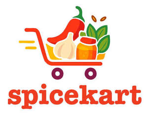

Trade Mark Journal No.2025/016 18 April 2025
UK00004183937 3 April 2025 (35,39)

- Class 35
- Retail services and wholesale services connected with the sale of bleaching and laundry preparations, cleaning, polishing, scouring and abrasive preparations, descaling preparations for household purposes, soaps, perfumery, leather preservatives and polishes including in spray form and creams, polishing and laundry wax, skin care preparations, moisturisers, body cleaning and beauty care preparations, cosmetics and cosmetic preparations, hair treatment preparations, soaps and gels, dentifrices and mouthwashes, toothpastes, pharmaceuticals and natural remedies, sanitary preparations and articles, nutritional and dietary supplements, wipes incorporating cleaning preparations, cosmetic cottonwool, disinfectants and antiseptics, anti-viral agents, anti-bacterial preparations, anti-viral and anti-bacterial gels, medicated and sanitising soaps and detergents, sanitizing wipes, disposable diapers, cutlery, hand tools and implements (hand operated), packaging, bags, food containers and bags, lids for food containers and cups, plastic bags, food wraps, aluminium foil, paper rolls (kitchen), greaseproof paper, labels, stationery, printed matter, batteries, household or kitchen utensils and containers, combs and sponges, brushes, mops and mop heads, drinking vessels, barware, articles for cleaning purposes, scourers, cookware and containers, tableware, napery, glassware, porcelain and earthenware, skewers, tooth brushes, household gloves, clips for sealing bags, food, groceries and beverages, household electronic and electrical apparatus, white goods, home and domestic appliances; information, consultancy and advisory services relating to all the aforesaid services.
- Class 39
- Transport services; distribution services; packaging and storage of goods; delivery services; gift wrapping; collection of goods; information, consultancy and advisory services relating to all the aforesaid services.
ANIL ANAND LTD
Representative: Trademark Eagle Limited